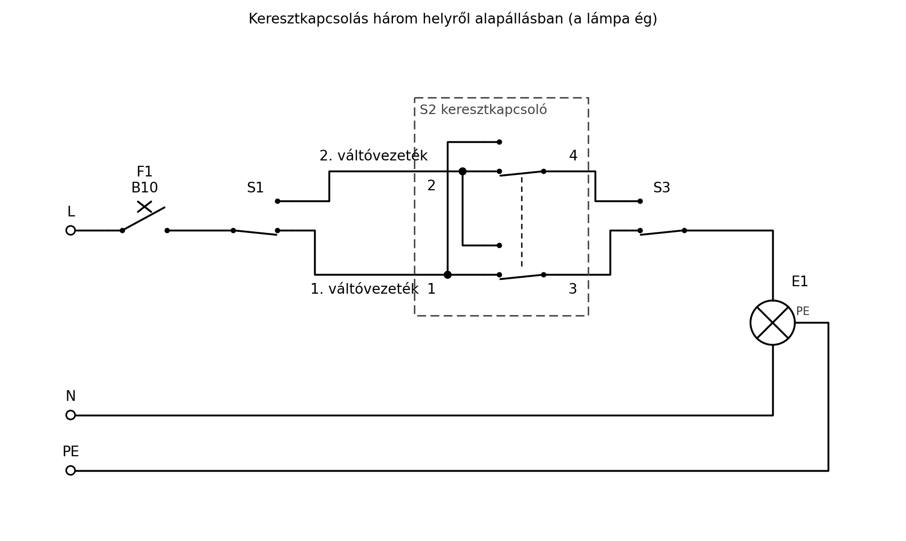
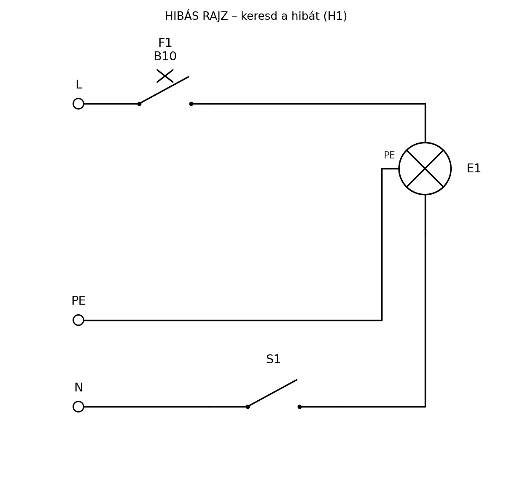
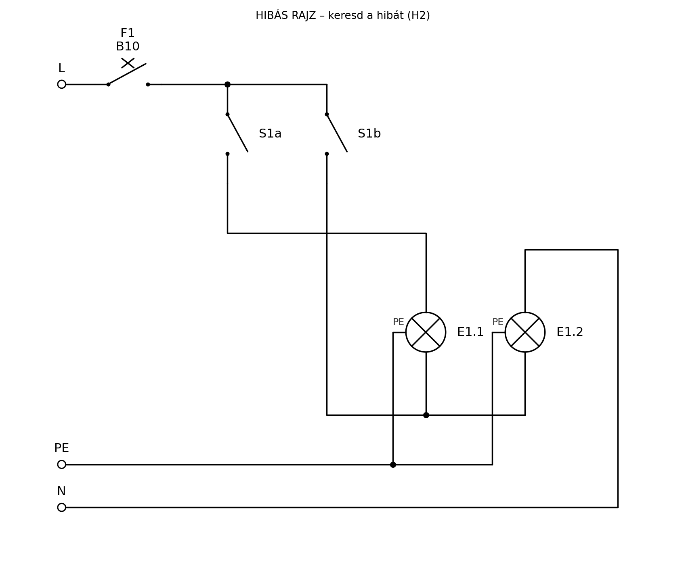
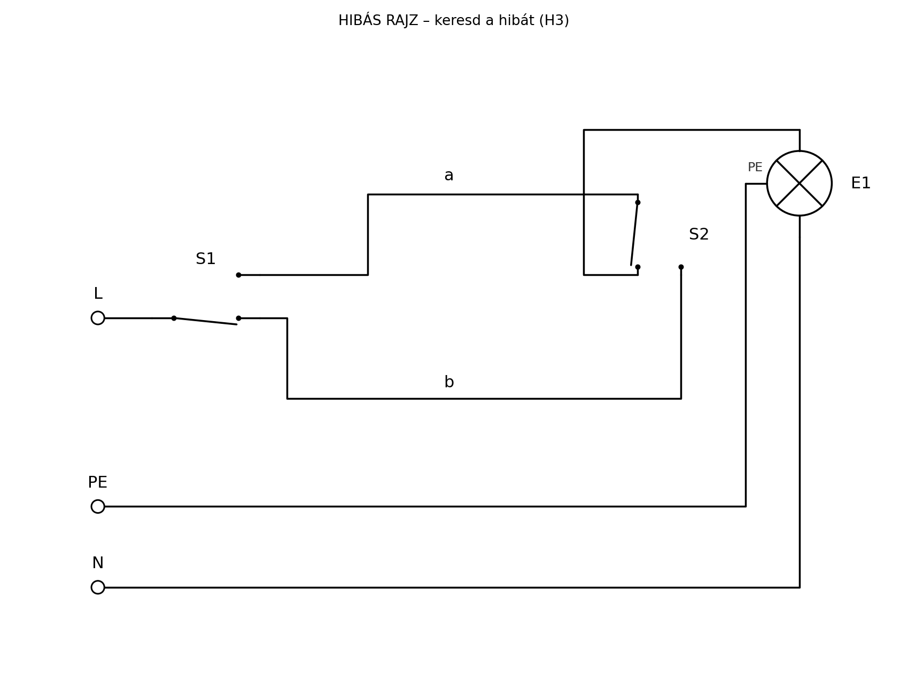
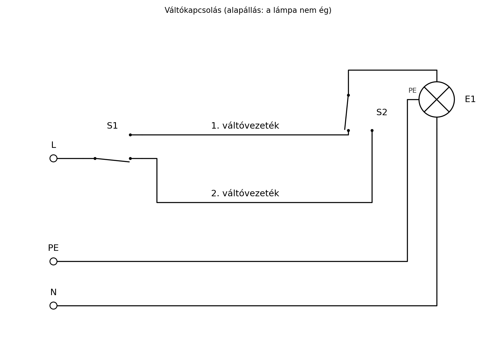
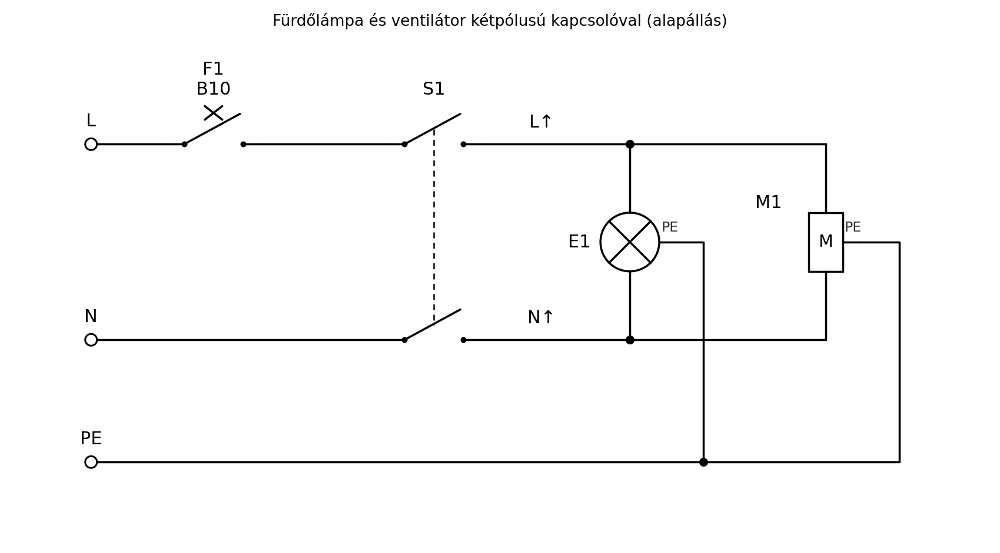
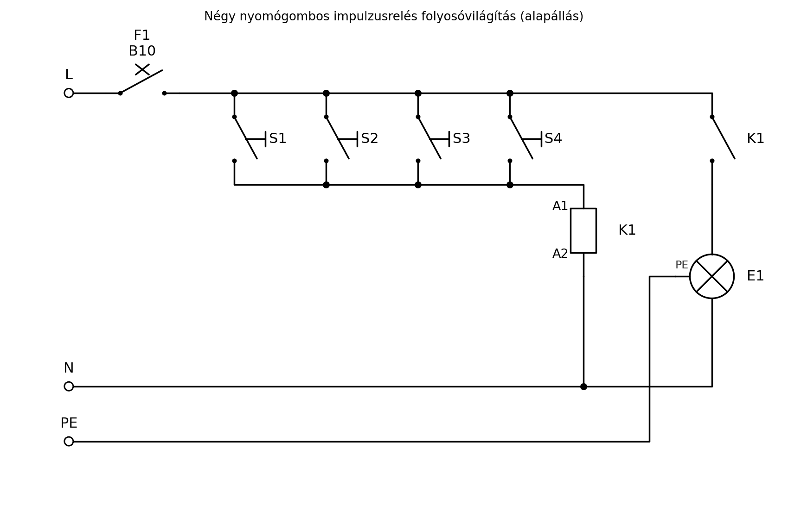
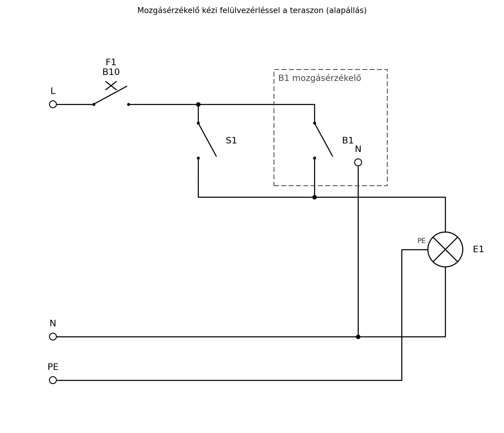

A kapcsolódó elmélet: tankönyv, 16.2 alfejezet.
Adott: egy lakáselosztóból jön L, N, PE. Egy mennyezeti lámpát akarunk egy kapcsolóval működtetni. A kapcsoló a szobaajtó mellett, a lámpa a mennyezeten.
Keresett: a bekötési sorrend és a szükséges vezetékek.
Megoldás: 1. Az elosztóból a kötődobozba behúzzuk a tápvezetéket: L (barna), N (kék), PE (zöld-sárga). 2. A kötődobozból két vezetéket viszünk a kapcsolóhoz: egy barna (állandó fázis) és egy fekete (kapcsolt fázis visszajövő). 3. A kapcsoló két kapcsára kötjük a barna és a fekete vezetéket; melyik melyikre, mindegy, mert csak szakít. 4. A kötődobozból a lámpához megy a fekete (kapcsolt fázis), a kék (nulla) és a zöld-sárga (PE). 5. A kötődobozban a bejövő barna és a kapcsolóhoz menő barna össze van kötve; a lámpa fekete vezetéke a kapcsoló felől visszajövő feketével; a nullák és a védővezetők értelemszerűen.
Ellenőrzés: feszültségmentesítés után multiméterrel ellenőrizzük a folytonosságot: kapcsoló be állásban a barna és a fekete vezetékek között nulla ellenállás van; kikapcsolva szakadás. A lámpafoglalatnál a fekete–kék és a fekete–zöld-sárga között lámpa nélkül minden kapcsolóállásban szakadás (∞) mérhető; 0 Ω itt zárlatot jelentene. A kapcsoló működése a dobozban a barna–fekete között, vagy a lámpa behelyezésével L–N között mérhető.
Adott: egy folyosó két végén egy-egy váltókapcsoló, középen egy keresztkapcsoló. Egy lámpát akarunk három helyről kapcsolni. A kötődobozok helyzete adott: a szélső kapcsolóknál egy-egy doboz, a keresztkapcsolónál egy doboz, a lámpánál egy doboz.
Keresett: a vezetékek elrendezése, a kapcsolók bekötési sorrendje.
Megoldás: A váltókapcsolók jelölése legyen S1 és S3, a keresztkapcsoló S2.
Az áramúti rajzon a keresztkapcsolót két váltóérintkező ábrázolja, amelyeket egy billentyű együtt mozgat (szaggatott mechanikus kapcsolat a kettő között). A kapcsok számozása a kapcsolóbetétek tablójáét követi: bemenet 1, 2, kimenet 3, 4. Alapállásban mindhárom kapcsoló a nyugalmi (rajzolt) helyzetében van, és a lámpa ég:

Kövesd végig az áramutat ujjal: L → F1 → S1 közös kapocs → S1 nyugalmi kapcsa → 1. váltóvezeték → S2 1-es kapocs → (egyenes állás) 3-as kapocs → S3 nyugalmi kapcsa → S3 közös kapcsa → E1 → N. Ha bármelyik kapcsolót átváltod, ez az út megszakad, és csak egy második átváltás zár újra utat. A rajzon a keresztkapcsoló keretén belül a két ferde összekötés nem hiba: minden bemenet egy nyugalmi és egy munkaérintkezőre csatlakozik, ezért keresztezi egymást a két vezeték (a keresztezésnél nincs pont, tehát nem érintkeznek).
A kapcsolási logika táblázata (S1, S2, S3 állásai; 0 = alapállás, 1 = váltott állás):
| S1 | S2 | S3 | Lámpa |
|---|---|---|---|
| 0 | 0 | 0 | ég |
| 0 | 0 | 1 | nem ég |
| 0 | 1 | 0 | nem ég |
| 0 | 1 | 1 | ég |
| 1 | 0 | 0 | nem ég |
| 1 | 0 | 1 | ég |
| 1 | 1 | 0 | ég |
| 1 | 1 | 1 | nem ég |
Tehát bármelyik kapcsoló átváltásával a lámpa állapota megfordul.
Négy helyről. A keresztkapcsolás tetszőlegesen bővíthető: a két szélső váltókapcsoló közé annyi keresztkapcsolót iktatunk, ahány további kapcsolási hely kell. Négy helyről a sorrend: S1 váltó – S2 kereszt – S3 kereszt – S4 váltó; egyvonalas vázlattal
L → S1 (váltó) ⇉ S2 (kereszt) ⇉ S3 (kereszt) ⇉ S4 (váltó) → E1 → N,
ahol a ⇉ a két váltóvezetéket jelöli. Nem kell 16 soros táblázatot felírni, mert egy egyszerű szabály dönt.
Szabály. Minden átváltás (bármelyik kapcsolón) megfordítja a lámpa állapotát. Ezért a lámpa állapota csak attól függ, hány kapcsoló van az alapállásától eltérő helyzetben: ha páros számú (0, 2, 4), a lámpa az alapállás szerinti állapotban van (a fenti bekötésnél ég), ha páratlan számú (1, 3), az ellenkezőjében. Ezért iktatható be bármennyi keresztkapcsoló: mindegyik csak egy újabb „fordító” a láncban.
Négy kiválasztott állás példának (0 = alapállás, 1 = átváltva; a bekötés olyan, hogy alapállásban ég):
| S1 | S2 | S3 | S4 | átváltott kapcsolók száma | Lámpa |
|---|---|---|---|---|---|
| 0 | 0 | 0 | 0 | 0 (páros) | ég |
| 1 | 0 | 0 | 0 | 1 (páratlan) | nem ég |
| 0 | 1 | 1 | 0 | 2 (páros) | ég |
| 1 | 1 | 1 | 0 | 3 (páratlan) | nem ég |
Ugyanez a kapcsolás a Áramúti, kapcsolási és huzalozási rajz; világítási áramkörök (tankönyv, 12.2) alfejezetben más rajzolási móddal (egyenes és keresztezett állás egy keretben) is szerepel, a gyakorlati megépítését pedig a Világítási áramkörök építése: egypólusú, váltó, kereszt (tankönyv, 40.1) gyakorlati útmutató vezeti végig.
A fizikai huzalozást az alábbi ábra mutatja, felül a kétkapcsolós váltókapcsolásra, alul a háromkapcsolós keresztkapcsolásra. A kötődobozba (1) csak négy összekötő kell: L, kapcsolt fázis (L↑), N és PE. A fázis az első váltókapcsoló (2) közös kapcsára megy, a kapcsolt fázis az utolsó váltókapcsoló (3) közös kapcsáról jön vissza. A két váltóvezeték (4) – itt fekete és szürke – a szerelvénydobozok között közvetlenül fut; keresztkapcsolásnál a keresztkapcsoló (5) bemenő párja (1, 2) az S1, kimenő párja (3, 4) az S3 felé megy. Mivel a fekete és a szürke ér már foglalt, a kapcsolt fázis barna, jelölőgyűrűvel megkülönböztetve (lásd a 4. feladat megoldását).
A leggyakoribb hiba itt is a közös kapocs eltévesztése: ha az utolsó kapcsoló közös kapcsára váltóvezeték kerül, a lámpa csak egy-egy állásban ég. A keresztkapcsolónál a bemenő és a kimenő pár nem cserélhető fel egymással. A HTML-kiadásban külön nézetben vizsgálhatod a váltó- és a keresztkapcsolást.
A fenti ábrán a váltóvezetékek közvetlenül a két szerelvénydoboz között futnak, a Világítási áramkörök építése: egypólusú, váltó, kereszt (tankönyv, 40.1) gyakorlatában viszont minden ér a kötődobozba fut be. Mindkét megoldás helyes, a kapcsolási rajz ugyanaz; a különbség a nyomvonalakban, az érszámban és a kötések helyében van. Az alábbi ábra ugyanazt a szobát mutatja a két változatban: az S1 az ajtó mellett, az S2 az ágy mellett (3,75 m-re), a lámpa a szoba közepén, a kötődoboz az ajtó fölött.
Számolás (felvett méretekkel, egyerű vezeték védőcsőben, függőleges szakaszok és ráhagyás nélkül). A nyomvonalak hossza a rajzról: KD–S1 3,23 m, KD–S2 6,98 m, KD–lámpa 2,06 m, S1–S2 4,71 m.
| Szakasz | hossz | A) érszám | A) vezeték | B) érszám | B) vezeték |
|---|---|---|---|---|---|
| KD–S1 | 3,23 m | 3 | 9,69 m | 1 | 3,23 m |
| KD–S2 | 6,98 m | 3 | 20,94 m | 1 | 6,98 m |
| KD–lámpa | 2,06 m | 3 | 6,18 m | 3 | 6,18 m |
| S1–S2 | 4,71 m | – | – | 2 | 9,42 m |
| összesen | 36,8 m | 25,8 m |
A B változat itt kb. 11 m-rel kevesebb vezetéket igényel, cserébe az S1–S2 szakaszon külön védőcső kell, és a kötések két szerelvénydobozban is vannak.
Szabály. A választott változatot a dokumentációban (huzalozási terv, átadási jegyzőkönyv) rögzíteni kell. Hibakereséskor a másik változatot feltételező szerelő rossz helyen keresi a váltóvezetékeket: a kötődobozban hiába keresi a 12 érvéget, ha a váltóvezeték a kapcsolók között fut.
Továbbvitt eredmény. A váltó- és keresztkapcsolás itt tanult logikáját használjuk a Lépcsőházi automata, impulzusrelé és időrelé alapkapcsolása (tankönyv, 16.3) alfejezetben: az impulzusrelé központi elektronikával valósítja meg ugyanezt a „bármelyik kapcsolóról váltható” működést, ezért a lépcsőházakban gyakran ezt alkalmazzák.
Cél: két helyről működtethető lámpakör kiépítése, a kapcsolási rajz és a huzalozási terv összekapcsolása, folytonosságméréssel ellenőrzés.
Eszközök és anyagok: tanműhelyi kapcsolótábla (törpefeszültségű vagy leválasztott tápegységgel), két váltókapcsoló, egy lámpa (vagy lámpafoglalat), sorkapcsok, vezetékek (barna, fekete, kék, zöld-sárga), multiméter, csavarhúzó.
Biztonsági korlát. A feladat tanműhelyi (törpefeszültségű) környezetre vagy jogosult oktató felügyeletére vonatkozik; hálózati feszültségen önállóan ne végezd. Minden bekötés előtt feszültségmentesíts, és alkalmazd az öt biztonsági szabályt.
Otthon törpefeszültségen előbb gyakorold: Otthoni tanulólabor és szerszámkészlet biztonságosan (tankönyv, 1.3), L1–L4 (egypólusú, csillár-, váltó- és keresztkapcsolás).
Az öt biztonsági szabály: 1. Lekapcsolás (a tápfeszültség kikapcsolása). 2. Visszakapcsolás elleni biztosítás (pl. lakat, figyelmeztető tábla). 3. Feszültségmentesség ellenőrzése (kétpólusú feszültségvizsgálóval). 4. Földelés és rövidre zárás (tanműhelyi táblánál ez gyakran elhagyható, de a szabályt ismerni kell). 5. Szomszédos, feszültség alatt álló részek lefedése.
Lépések: 1. Rajzold fel a kapcsolási rajzot a tábla peremére vagy jegyzetbe. 2. Készítsd el a huzalozási tervet: melyik kapocsba melyik vezeték kerül. 3. Helyezd el a két váltókapcsolót és a lámpát a táblán. 4. Húzd be a vezetékeket a kapcsokhoz, a tömör vezeték végét egyenesen, a hajlékony vezetékét érvéghüvellyel készítsd elő, a tanműhelyi szabályok szerint. 5. Kösd be az S1 közös kapcsára a fázist (barna). 6. Kösd az S1 váltóérintkezőiről a két átkötő vezetéket (fekete, szürke) az S2 váltóérintkezőihez. 7. Kösd az S2 közös pontját a lámpa fázis oldalára. 8. Kösd a lámpa másik oldalát a nullára (kék). 9. Kösd a védővezetőt a lámpatesthez (zöld-sárga), ha van. 10. Ellenőrizd a kapcsolatokat: minden csavar meghúzva, nincs kilógó rézszál.
Ellenőrzés (feszültségmentes állapotban): - Multiméterrel folytonosságot mérsz: a fázis és a lámpa fázis oldala között. A lámpa akkor ad folytonosságot, ha a két kapcsoló azonos (vagy ellentétes – a bekötéstől függő) állásban van. Váltogasd a kapcsolókat, és figyeld, hogy minden átváltás megfordítja az eredményt. - Vedd ki a fényforrást (vagy kösd le a lámpát), majd mérj a fázis és a nulla, valamint a fázis és a PE között minden kapcsolóállásban: folytonosság nem lehet. A lámpával együtt mérve az „égő” állásokban a lámpa ellenállása látszik – ez nem zárlat.
Tipikus hibák a gyakorlatban: - a közös kapocs és egy váltóvezeték felcserélése: egyes kapcsolóállásokban az egyik kapcsoló hatástalan (a két váltóvezeték egymás közti cseréje nem hiba, csak az alapállást fordítja meg); - a kapcsolt fázis színét kékre választják, ami félrevezető.
Dokumentálás: a bekötött tábláról készíts fényképet, és rögzítsd a mért ellenállásértékeket.
A meglévő, hibásan bekötött kapcsolások felderítése a szerelő mindennapos feladata. A H1–H8 esetek mérése feszültségmentes állapotban történik (a H1 kivételével, amelyet csak jogosult személy mérhet, vagy tanműhelyi törpefeszültségű táblán modellezhető). Oldd meg, mielőtt a megoldást megnézed.
H1. Mit mérsz kikapcsolt állapotban a foglalat középső érintkezője és a PE között?

H2. A kötődobozban a lámpa felé menő ↑2 ér az N-összekötőbe, a lámpa N ere pedig a ↑2-összekötőbe került. Vezesd le izzólámpás csillárra a négy kapcsolóállást!

H3. Váltókapcsolás: a megrendelő szerint a lámpa „szinte soha nem ég”. A folytonossági mérés az L tápkapocs és a lámpa ↑ kapcsa között (0 = az ábrán rajzolt állás):
| S1 | S2 | Folytonosság |
|---|---|---|
| 0 | 0 | ∞ |
| 0 | 1 | ∞ |
| 1 | 0 | 0 Ω |
| 1 | 1 | ∞ |
Mi a hiba?

H4. Keresztkapcsolás három helyről: az S2 kimenő párja a bemenő párral fel van cserélve (az S2 bemenetére az S3 felől jön a pár). Működik-e a kapcsolás? Mikor lenne hibás egy ilyen csere?
H5. Az S2 keresztkapcsolón egy bemenet és egy kimenet fel van cserélve (az 1-es és a 3-as kapocs ere). Folytonossági mérés L és a lámpa ↑ kapcsa között (0 = alapállás; helyes bekötésnél alapállásban a lámpa ég):
| S1 | S2 | S3 | Mért | S1 | S2 | S3 | Mért |
|---|---|---|---|---|---|---|---|
| 0 | 0 | 0 | 0 Ω | 1 | 0 | 0 | ∞ |
| 0 | 0 | 1 | ∞ | 1 | 0 | 1 | 0 Ω |
| 0 | 1 | 0 | ∞ | 1 | 1 | 0 | ∞ |
| 0 | 1 | 1 | ∞ | 1 | 1 | 1 | ∞ |
Mely állásokban hibás a működés, és mi a közös bennük?
H6. Egy újonnan felszerelt kapcsolóval a kikapcsolt LED-lámpa halványan dereng. A kapcsoló billentyűjén kis fény világít kikapcsolt állapotban. Mi az ok?
H7. Kétpólusú kapcsolásnál a lámpa felé menő N↑ ér a közös N-összekötőbe került. Mit mutat a leválasztás ellenőrzése?
H8. (D) Mérési jegyzőkönyv egy váltókapcsolásról: folytonosság L és a lámpa ↑ kapcsa között a (0,0), (0,1), (1,0), (1,1) állásokban rendre 0 Ω, ∞, ∞, ∞. Rajz nem áll rendelkezésre. Következtess a lehetséges hibákra, és tervezd meg a szétválasztó mérést!
A válaszok a Megoldások szakasz elején találhatók.
1. feladat (A). Definiáld az egypólusú és a váltókapcsolást, és írd le, mi a különbség a szerepükben.
2. feladat (A). Számítsd ki, hány vezetékvégnek kell lennie egy kötődobozban egy egypólusú kapcsolásnál, ha a táp bejön, a kapcsolóhoz lemegy két vezeték, és a lámpához kimegy három vezeték (fázis, nulla, PE). Add meg a színeket is.
3. feladat (B). Rajzold le egy váltókapcsolás kapcsolási rajzát, és készítsd el a kapcsolási logika táblázatát. Jelöld a kapcsok: S1 közös, S1-1, S1-2, S2 közös, S2-1, S2-2.
4. feladat (B). Egy keresztkapcsolást három helyről akarunk kiépíteni. A szélső váltókapcsolók között 10 méter a távolság, a keresztkapcsoló középen van. Felsorolod a vezetékeket: hány ér megy a két váltó között a keresztkapcsolón át? Milyen színeket javasolnál?
5. feladat (C). Hibaelemzés: Egy szerelő bekötött egy váltókapcsolást, de a lámpa a négy lehetséges kapcsolóállás-kombinációból csak egyben ég. Melyik hibalehetőségre gyanakszol? Vázold fel a rajzot, és indokold.
6. feladat (D). Gyakorlati feladat: Tanműhelyi táblán építs meg egy keresztkapcsolást három kapcsolóval. A méréshez multimétert használj. Írd le, milyen mérést végeznél annak igazolására, hogy a kapcsolás minden állásban helyesen működik, és milyen eredményeket vársz.
Rajzkészítési feladatbank (7–16.). Minden feladatban a megrendelő igényéből indulsz. Add meg a kapcsolás nevét, rajzold fel az áramúti rajzot, a huzalozási és az installációs vázlatot, írd be szakaszonként az érszámot, a kötődobozbeli érvég- és összekötőszámot, a kábeltípust és az anyaglistát. A feltevés a vezetékszám-táblázaté (minden ér a KD-ben kötődik).
Önellenőrzés – válaszok
Feladatok – megoldások
1. feladat (A). Az egypólusú kapcsolás egyetlen kapcsolóval szakítja meg a fázist. A váltókapcsolás két váltókapcsolóval két helyről vezérel egy lámpát; a két kapcsoló közös pontjai a fázishoz és a lámpához, a váltóérintkezők páronként össze vannak kötve.
2. feladat (A). A kötődobozba behúzott vezetékek: L (barna), N (kék), PE (zöld-sárga) – ez 3 ér. A kapcsolóhoz lemegy L (barna) és kapcsolt fázis vissza (fekete) – ez 2 ér. A lámpához kimegy kapcsolt fázis (fekete), N (kék), PE (zöld-sárga) – ez 3 ér. Összesen 8 vezetékvég (a dobozban néhány összekötéssel). A PE-t külön lehet kötni sorkapoccsal.
3. feladat (B). A kapcsolási rajz:

A logikai táblázat (a rajz szerint az S1 alapállásban a 2. (alsó), az S2 alapállásban az 1. (felső) váltóvezetékre kapcsol):
| S1 állás | S2 állás | Áramút | Lámpa |
|---|---|---|---|
| 0 | 0 | nincs | nem ég |
| 0 | 1 | van | ég |
| 1 | 0 | van | ég |
| 1 | 1 | nincs | nem ég |
Tehát a kapcsolók ellenkező állása esetén ég.
4. feladat (B). A két váltókapcsoló között a távolság 10 m, középen a keresztkapcsoló. A váltókapcsolók váltóérintkezőiről két-két vezeték megy a keresztkapcsolóhoz. Tehát a váltó és a kereszt között 2 ér fut; a kereszt és a másik váltó között szintén 2 ér. Összesen tehát a szakaszon 4 vezeték van, de ezek két-két párt alkotnak. Javasolt színek: fekete és szürke a két átkötő vezeték; a fázis (barna) az egyik váltó közösére, a kapcsolt fázis a másik váltó közöséből a lámpához barna ér, az állandó fázistól jelölőgyűrűvel megkülönböztetve (ha nincs elég szín, a vezetékvégeket mindig jelöld).
5. feladat (C). A hiba: valamelyik kapcsoló közös kapcsára egy váltóvezeték, a fázis vagy a lámpa vezetéke pedig egy váltókapocsra került. Ilyenkor a lámpa csak abban az egy állásban ég, amikor mindkét kapcsoló véletlenül a „jó” vezetékre áll; a többi három állásban az áramút megszakad. Ellenőrzés: a közös kapcsok azonosítása (L / nyíl jelölés), átkötés. A rajzon ellenőrizni kell, hogy a közös pontok a megfelelő helyre vannak-e kötve.
6. feladat (D). A mérés: feszültségmentes állapotban multiméterrel folytonosságot mérünk a bemenő fázis és a lámpa fázis kapcsa között. A három kapcsoló mind a 8 lehetséges állásában megmérjük az ellenállást. Működő kapcsolásnál az ellenállás 0 ohm közelében van, amikor a lámpa ég, és végtelen (szakadás), amikor nem ég. Azt is ellenőrizni kell, hogy bármelyik kapcsoló átváltásakor az eredmény az ellenkezőjére változik. Továbbá a fényforrás kivétele (leválasztása) után a fázis–nulla és a fázis–PE között nem szabad folytonosságnak lennie; a lámpával együtt mérve az „égő” állásokban a lámpa ellenállása látszik, ez nem zárlat.
7. feladat. Egypólusú kapcsolás (áramúti rajza a „Szemléletes kép” szakaszban). Érszám: táp 3, kapcsoló 2, lámpa 3; 8 érvég, 4 összekötő. Kábel: táp és lámpa NYM-J 3×1,5; a kapcsolóhoz csőben barna és fekete vagy NYM-J 4×1,5. Anyag: 1 egypólusú kapcsolóbetét kerettel, 1 szerelvénydoboz, 1 kötődoboz, 1 lámpatest, 4 összekötő; a lámpatest védettsége a helyiség szerint.
8. feladat. Jelzőfényes kapcsolás (áramúti rajz: Kapcsolók (tankönyv, 16.1), jelzőfényes betét). Érszám: táp 3, kapcsoló 3 (L, ↑, N), lámpa 3; 9 érvég, 4 összekötő (az N-összekötőben három ér, ezért itt nem igaz, hogy az összekötők száma az érvégek fele). Kábel a kapcsolóhoz: csőben barna, fekete, kék, vagy NYM-J 5×1,5 (a 4×1,5-ben nincs kék ér). Anyag: 1 jelzőfényes betét, 2 doboz, 1 lámpa, 4 összekötő.
9. feladat. Csillárkapcsolás (áramúti rajz a „Definíciók és szabályok” szakaszban; az egyik csoport 2, a másik 3 izzó). Érszám: 3, 3, 4; 10 érvég, 5 összekötő. Kábel: kapcsolóhoz NYM-J 4×1,5, lámpához NYM-J 5×1,5. Anyag: 1 csillárkapcsoló, 2 doboz, 1 csillár, 5 összekötő.
10. feladat. Váltókapcsolás (áramúti rajz: 3. feladat). Érszám: táp 3, S1 3, S2 3, lámpa 3; 12 érvég, 6 összekötő. Kábel: a kapcsolókhoz NYM-J 4×1,5, a lámpához 3×1,5. Anyag: 2 váltókapcsoló, 3 doboz, 1 lámpa, 6 összekötő.
11. feladat. Kétpólusú kapcsolás két párhuzamos fogyasztóval:

Érszám: táp 3, kapcsoló 4, lámpa 3, ventilátor 3; 13 érvég, 5 összekötő (L, N, L↑, N↑, PE). Kapcsolóhoz csőben barna, fekete, kék, kék jelölőgyűrűvel; a fogyasztókhoz NYM-J 3×1,5. Anyag: 1 kétpólusú kapcsoló (a zónán kívül), 2 doboz, lámpa, ventilátor (a zónához illő IP), 5 összekötő. Utánfutáshoz külön állandó fázis kell (16.3 (tankönyv, 16.3)).
12. feladat. Keresztkapcsolás (áramúti rajz: 2. példa). Érszám: táp 3, S1 3, S2 4, S3 3, lámpa 3; 16 érvég, 8 összekötő. Az S2-höz egyerű vezeték csőben (4 váltóvezeték) vagy két kábel; a szélső kapcsolókhoz NYM-J 4×1,5. Anyag: 2 váltó, 1 kereszt, 4 doboz, lámpa, 8 összekötő.
13. feladat. Négy helyről keresztkapcsolással 2 váltó és 2 kereszt kell, a kereszt-szakaszokhoz 4 ér, a KD-ben 20 érvég és 10 összekötő. Impulzusreléval a négy nyomógomb párhuzamos, és mindegyikhez csak 2 ér (L, vezérlő) kell. Négy helytől ezért az impulzusrelé a jobb választás: kevesebb ér, egyszerűbb bővítés, azonos nyomógombok.

14. feladat. A mozgásérzékelő (B1) kimenete és az S1 kézi kapcsoló párhuzamos: S1 bekapcsolva a lámpa folyamatosan ég, kikapcsolva az érzékelő működtet (16.3 (tankönyv, 16.3)).

Érszám: táp 3, kapcsoló 2, érzékelő 3 (L, N, ↑), lámpa 3; 11 érvég, 4 összekötő (L, ↑, N, PE). Kábel: kapcsolóhoz csőben vagy NYM-J 4×1,5, érzékelőhöz NYM-J 5×1,5 (kék N miatt; a fölös erek szigetelten), lámpához 3×1,5. Anyag: kapcsoló, IP44 érzékelő és lámpatest, dobozok, 4 összekötő.
15. feladat. 12 érvég és 6 összekötő a váltókapcsolás „A” változatára jellemző (táp 3 + S1 3 + S2 3 + lámpa 3). Más kombináció is adhat 12 érvéget, ezért ellenőrizni kell: feszültségmentesen azonosítod, melyik nyomvonal hova megy, megnézed a betéteket (háromkapcsos váltó), és folytonosságot mérsz mind a négy állásban.
16. feladat. Keresztkapcsolás két párhuzamos lámpával. Érvégek: táp 3 + S1 3 + S2 4 + S3 3 + 2 · 3 = 19; összekötők: L, N, PE, ↑ és 4 váltóvezeték = 8. Anyag: 2 váltókapcsoló-betét, 1 keresztkapcsoló-betét, 3 keret, 3 szerelvénydoboz, 1 kötődoboz, 2 lámpatest, 8 összekötő (ebből három 3 eres), H07V-U 1,5 mm² vezeték csővel vagy NYM-J 4×1,5 és 3×1,5; a hosszakat a 15.2 (tankönyv, 15.2) képletével számold.
Hibakeresési gyakorlat – megoldások.
H1. A kapcsoló a nullában van. Kikapcsolva a lámpa nem ég, de a foglalat mindkét érintkezője az L-lel marad kapcsolatban (a lámpán át), a középső érintkező és a PE között 230 V mérhető. Veszélyes. Javítás: a kapcsoló a fázisba kerül, a lámpa közvetlenül az N-re.
H2. S1a és S1b ki: egyik sem ég. Csak S1a: az áram L → E1.1 → közös pont → E1.2 → N, a két csoport sorosan, halványan világít. Csak S1b: a közös pont L-en van, az E1.2 teljes fénnyel ég, az E1.1 nem (a másik vége nyitott). Mindkettő be: az E1.1 mindkét vége fázison, nem ég; csak az E1.2 ég. Veszély: S1b bekapcsolt állásában a csillár „N” kapcsa fázison van. Javítás: a ↑2 és az N ér a saját összekötőjébe.
H3. Az S2 közös kapcsára az egyik váltóvezeték (a) került, a lámpa ere pedig az egyik váltókapocsra. Javítás: a lámpa ere az S2 közös kapcsára, a két váltóvezeték a két váltókapocsra; utána két állásban kell folytonosságot mérni.
H4. Működik: a keresztkapcsoló a bemenő és a kimenő pár felcserélésére szimmetrikus. Hibás akkor lenne, ha egy pár a be- és a kimenet között keresztbe kerülne, például az S1-ből jövő két ér az 1-es és a 3-as kapocsra (az 1-es és 2-es helyett).
H5. Helyes működésnél folytonosság a (0,0,0), (0,1,1), (1,0,1), (1,1,0) állásokban van. Mérve csak (0,0,0) és (1,0,1) jó; a (0,1,1) és (1,1,0) hibás, sőt S2 = 1 állásban sosem ég a lámpa: a keresztkapcsoló ilyenkor a két váltóvezetéket egymással köti össze. Javítás: az 1-es és a 3-as kapocs ereinek visszacserélése.
H6. Irányfényes kapcsoló: a jelzőfény árama a lámpán át folyik, és a LED-meghajtót tölti. Javítás: N-kapcsos vagy fény nélküli betét, vagy a gyártó által engedett kompenzáló elem (16.1 (tankönyv, 16.1)).
H7. Kikapcsolt S1 mellett, feszültségmentesen a lámpa N kapcsa és a kötődoboz N-összekötője között folytonosság (kb. 0 Ω) mérhető, pedig szakadásnak kellene lennie: a leválasztás hatástalan. Javítás: az N↑ saját, külön összekötőbe.
H8. A kép kétféle hibából is adódhat: (a) az egyik váltóvezeték szakadt (a két „jó” állásból egy megszűnik), vagy (b) valamelyik kapcsolón váltóvezeték került a közös kapocsra. Szétválasztás: feszültségmentesen, a kapcsolókat kikötve mérd mindkét váltóvezeték folytonosságát végponttól végpontig. Ha az egyik szakadt, az a hiba (vezeték vagy kötés). Ha mindkettő ép, azonosítsd mindkét betét közös kapcsát (jelölés, folytonosság a betéten), és ellenőrizd, hogy az S1 közösén a fázis, az S2 közösén a lámpa ere van-e.
Példa egypólusú kapcsolásra. A kapcsolóhoz a kötődobozból bemegy egy barna fázisvezető, és kijön belőle egy fekete kapcsolt fázis. A lámpához a dobozból megy a fekete kapcsolt fázis, a kék nulla és a zöld-sárga védő. A kötődobozban tehát 8 vezetékvég csatlakozik: bejövő L, N, PE; a kapcsolóhoz menő barna és a visszajövő fekete; a lámpához menő fekete, kék és zöld-sárga.
Az alábbi ábra ugyanezt a fizikai bekötést mutatja, védőcsőben húzott egyerű vezetékekkel. A kötődobozban (2) négy bedugós vezetékösszekötő van: az L-összekötő (3) a bejövő és a kapcsolóhoz lemenő barnát köti össze, a kapcsolt fázis összekötője (4) a kapcsolóból visszajövő és a lámpához menő feketét, az N- (5) és a PE-összekötő (6) pedig a bejövő és a lámpához menő kéket, illetve zöld-sárgát. A kapcsolóbetéthez (8) csak a két fázisér megy le, a lámpatest sorkapcsára (9) a kapcsolt fázis, a nulla és a védővezető érkezik.
Kidolgozott példa – csillár. Érvégek: táp 3 (L, N, PE) + kapcsoló 3 (L, ↑1, ↑2) + lámpa 4 (↑1, ↑2, N, PE) = 10. Potenciálok: L, ↑1, ↑2, N, PE → 5 összekötő, mindegyikben két ér.
Kidolgozott példa – kereszt 3 helyről. Érvégek: táp 3 + S1 3 (L, 1., 2. váltóvezeték) + S2 4 (1.–4. váltóvezeték) + S3 3 (↑, 3., 4. váltóvezeték) + lámpa 3 (↑, N, PE) = 16. Potenciálok: L, N, PE, ↑ és a négy váltóvezeték → 8 összekötő.